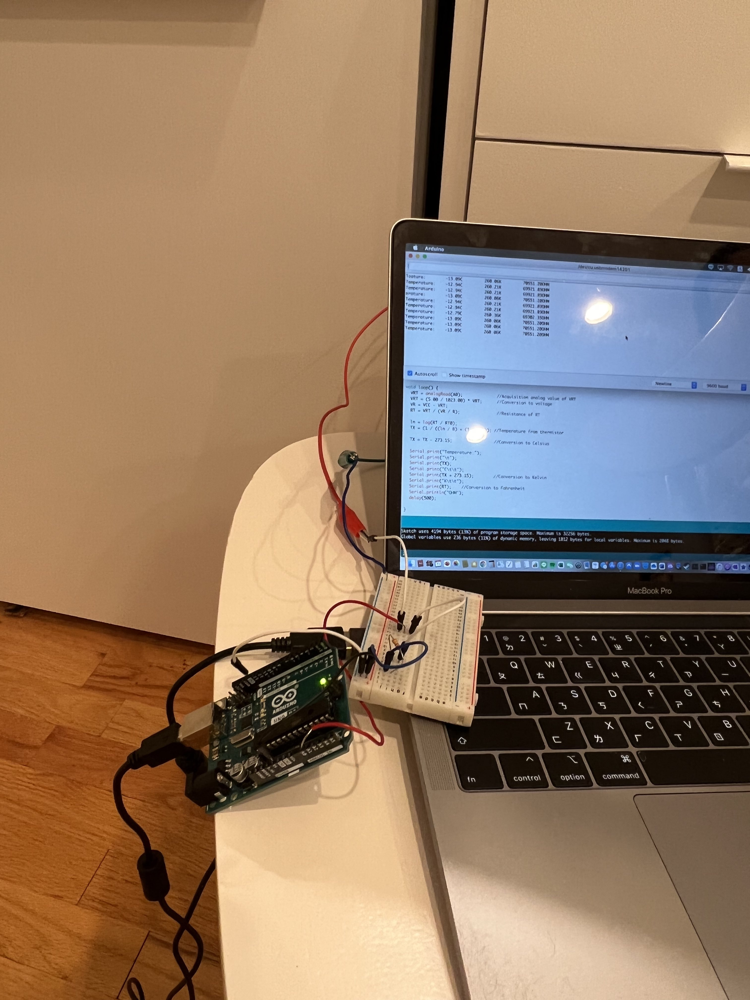

<div>
</div>
<div class="col-sm-4">
<img alt="INTRO" src="./circuit.gif" class=center>
</div>
After viewing the multiple options available, because my final project is going to be an air conditioning device, I will be using the thermistor.
<div>
</div>
This will be my circuit
<div>
</div>
<div class="col-sm-4">
<img alt="INTRO" src="./IMG_1426.jpg" class=center>
</div>
<div>
</div>
<div class="col-sm-4">
<img alt="INTRO" src="./IMG_1425.jpg" class=center>
</div>
(I dont know if my schematic is correct or not, but the actual circuit works)
<div>
</div>
<div class="col-sm-4">
<img alt="INTRO" src="./code.gif" class=center>
</div>
<pre>
//Thermometer with thermistor
/*thermistor parameters:
* RT0: 10 000 Ω
* B: 3977 K +- 0.75%
* T0: 25 C
* +- 5%
*/
//These values are in the datasheet
#define RT0 10000 // Ω
#define B 3977 // K
//--------------------------------------
#define VCC 5 //Supply voltage
#define R 10000 //R=10KΩ
//Variables
float RT, VR, ln, TX, T0, VRT;
void setup() {
Serial.begin(9600);
T0 = 25 + 273.15; //Temperature T0 from datasheet, conversion from Celsius to kelvin
}
void loop() {
VRT = analogRead(A0); //Acquisition analog value of VRT
VRT = (5.00 / 1023.00) * VRT; //Conversion to voltage
VR = VCC - VRT;
RT = VRT / (VR / R); //Resistance of RT
ln = log(RT / RT0);
TX = (1 / ((ln / B) + (1 / T0))); //Temperature from thermistor
TX = TX - 273.15; //Conversion to Celsius
Serial.print("Temperature:");
Serial.print("\t");
Serial.print(TX);
Serial.print("C\t\t");
Serial.print(TX + 273.15); //Conversion to Kelvin
Serial.print("K\t\t");
Serial.print(RT); //Conversion to Fahrenheit
Serial.println("OHM");
delay(500);
}
</pre>
<div>
</div>
<div class="col-sm-4">
<img alt="INTRO" src="./download (19).gif" class=center>
</div>
To test the lower limit of the thermistor, I placed it into the freezer.
<div>
<div>
</div>
<div class="col-sm-4">

</div>
The lowest temperature tested was -13 degrees C. I am not sure if this was because it was an actual limit of the thermistor or it was just the temperature the freezer was at. I am leaning more towards the latter, as according to how temperature is calculated in this case, the lowest temperature should just be abosulute zero.
<div>
</div>
<div class="col-sm-4">
<img alt="high" src="./download (21).gif" class=center>
To test the upper limit, I decided to just place the thermistor on an open fire.
<div>
</div>
<div class="col-sm-4">
<img alt="high" src="./unknown (3).png" class=center>
Unfortunately, the results were lost; however, the highest temperature recorded was 347.3 degrees C, which had a resistance of 9 OHMs, which makes sense because the temperature approaches infinity when the resistance does.
<table>
<tr>
<th>Temperature</th>
<th>Resistance</th>
</tr>
<tr>
<td>43.35</td>
<td>4614.2</td>
</tr>
<tr>
<td>38.89</td>
<td>5523</td>
</tr>
<tr>
<td>22.61</td>
<td>11136.36</td>
</tr>
<td>13.52</td>
<td><17063.5</td>
</table>
[GO BACK](../index.html).
</div>